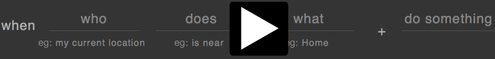
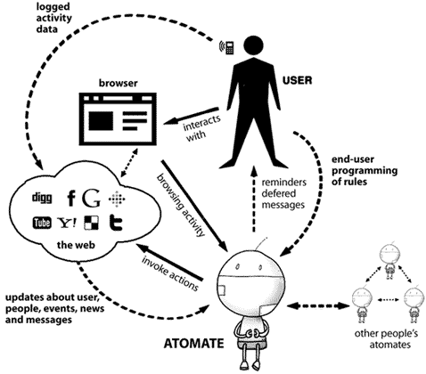

be up to date
Atomate regularly checks your favorite social sites,
blogs and web 2.0 services for new content.
auto-share
Use Atomate to automatically share interesting items
with your friends.
just-right info
Atomate can text you 'important' emails when you're
traveling or your grocery list when you get to
the store.
its free!
Atomate runs
in Firefox
and is free and open source
software (source)

reminders

In the first example, we show how to combine multiple data
sources in an Atomate rule. We use information from both
Dopplr and the Firefox to automatically notify your
colleagues when you are out of town.
custom RSS

In the second example, we show how to add a custom RSS feed,
rename a field in the RSS feed (from 'title' to 'name') and
then use data from the RSS feed in an Atomate rule,
extras
Atomate can
use Growl to
send you notifications.
if you would like for Atomate to use Growl, please
install Growl
OSX ||
Windows
and install
yip
intro
Atomate can be used to remind you of a calendar event,
especially if that event is dependent on something normally
hard to check. For instance, you may have a meeting with a
colleague, but you only want to be reminded if the colleague
is actually in their office (and if you aren't already
there). Atomate lets you set a rule to say: "when I have an
upcoming meeting in my calendar with [colleague], alert me if
that colleague enters the office, and I am not near his
office". The locations of events, places or friends can be
used in other ways too. For instance, you may often forget to
take your shopping list to the grocery store. Atomate lets you
create your shopping list at home, and a rule that says "when
I am near the grocery store, text me my shopping list".
how does it work?

Atomate, treats feeds from social networking and
life-tracking sites as sensor streams, integrating
information from such feeds into a simple
unified RDF world model
representing people, places and things and their
time-varying states and activities. Combined with other
information sources on the web, including the your online
calendar, web-based e-mail client, news feeds and messaging
services, Atomate can be made to automatically carry out a
variety of simple tasks, ranging from context-aware
filtering and messaging, to sharing and social coordination
actions. Atomate's open architecture and world model easily
accommodate new information sources and actions via the
addition of feeds and web services. To make the system easy
to use, Atomate provides a constrained-input natural
language interface (CNLI) for behavior specification, and a
direct-manipulation interface for inspecting and updating
its world model.
data
NOTE: All data is archived on your personal computer. It is NOT sent to any external websites.
Currently, Atomate imports your data from
Google Calendar,
Facebook,
Listit,
Skydeck,
Twitter,
Foursquare,
Last.fm,
Dopplr,
Flickr,
Wesabe and is able
to track your location, the local weather and your web
browsing history from the Firefox browser. Also, Atomate
can import data from any RSS feed. Please email
the Google
Group if you would like to recommend a service or could assist in integrating your service of
choice.
Additionally, with the Atomate-Nexus, your Atomate is able to import
information from other Atomates. You can share selected
entities (like people) and their properties (like their
location) with selected friends.
download
This Firefox extension is a combination of three
different systems: use List.it
to take notes, Atomate
to create smart reminders and actions,
and Poyozo to
explore your personal activity logs.
To stay in touch about updates please join the Google Group here!